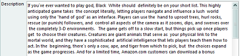
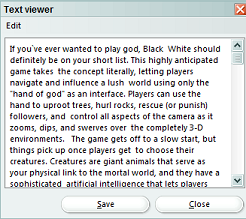
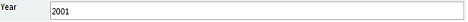
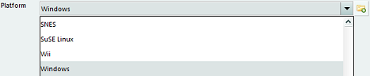
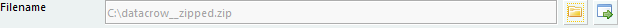
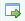

Item Form
Menu Path > File > New (CTRL-N)
or double-click an existing item in the item view
The item form shows a single item, new or existing. The form allows you to create, update, or delete an item.

Changes to an item can be saved by pressing the "Save" button. Pressing the "Cancel" button discards any changes you have made (a warning is shown first) and closes the form.
To delete an item, press the "Delete" button.
Filling field information
Fields are placed in seperate tabs. You can modify the layout of the item form using the
item form settings.
Text Field
In a text field, as shown below, you can enter enay kind of text.

There are also larger text fields such as the description field as shown below:

The scrollbar on the right hand side can be used to move up and down through the text.
To view the text even better you can double click anywhere in the field and a seperate dialog is opened:

This dialog can be enlarged, of course, and can be used to view and/or edit the text in a more convenient way.
Number Field
In a number field only numbers can be entered (without decimal characters).

Drop Down
Drop downs contain pre-defined values that can be assigned to an item. Simply select the value from the list.

In case you are missing an item in the drop down a new item can be created.
To add a new item to the list press the  button. This will open
a new item form where the values can be entered. Press "Save" once satisfied and the item will be added to the Drop Down.
button. This will open
a new item form where the values can be entered. Press "Save" once satisfied and the item will be added to the Drop Down.
Multi-Reference Field
With this field multiple references can be set on an item. In other words this field allows multiple items to be selected.

Each of the listed items can be clicked upon to review the details (in the example above you coulc for example click on Algeria
and the country details would be displayed). To assign and/or unassign items click on the  icon.
The assignment dialog is opened.
icon.
The assignment dialog is opened.

On the left hand side the available items (countries in above example) are shown. These items are not assigned to the item
but are available to be assigned to the item if you so wish. On the right hand side the selected items are shown. These items
are actually assigned to the item.
To assign an item double click on the corresponding available item. To remove an assigned item double click on the corresponding
assigned item.
Press "Save" to store the changes.
In case you are missing an item a new item can be created straight away.
To add a new item press the button. This will open
a new item form where the values can be entered. Press "Save" once satisfied and the item will be added to references of this item.
File Field
Here a link can be created to a file in the system. Press the icon
to browse for the file you want to link to this item.

A file can be started/launched by clicking on the  icon.
Images
Each image of an item is shown in a separate tab. Images can be exported, edited, added, deleted or replaced via these tabs.
To add or replace an image select for example "Add from File" from the "File" menu and browse for the specific image.
To save the image to disk select "save as".
Via the "edit" menu an image can edited or deleted. There are several options for editing such as rotating and sharpening.
Online Update
Not all modules offer this functionality. If this feature is available then there is an "Update" button in the lower part of the item form.
The Online Update allows you to find (and use) information about your item using an online service. More on this is explained here.
Read file information
To read the information from a movie file, a music file, etc go to the "file" menu and select "Read file information". If the item already has a filename defined, the information from that file is (re-) read. Otherwise a dialog is opened which allows you to browse for the file from which you want the information to be read. Data Crow will read the information from the file and update the values in the item form.
Loan administration
Read this for more help.